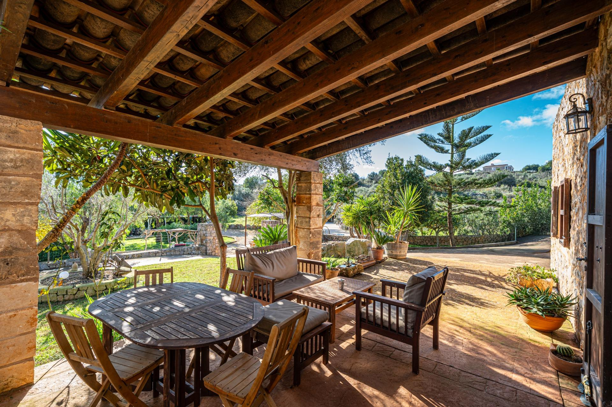

€799.900
Sant Llorenç des Cardassar countryside, Mallorca
Open the listingPreferred east pocket: irregular exposed fieldstone casitas, timber-beamed covered terrace, terracotta, and a private organic-shaped pool lined in rough natural stone — not a north-coast modern box. Fully self-sufficient (solar array + 10 batteries, own well), two independent casitas on a huge ~21,847 m² hillside plot. €799.9k undercuts east-island stone-with-pool comps that often clear €1.1–1.5M.
Opened 6 Sep 2026. Gestpropiedad ref 05lf029 / 05LF029; price 799.900€; 3 bed / 2 bath; 106 m² built; 21,847 m² plot; year 1999; energy G; updated 21 Jul 2026. Agency wording: piscina natural + two independent casitas + solar/batteries. Photos (apinmo 27575344) confirm exposed stone + finished private stone-lined pool. Not on prior board. Distinct from board arta-rustic / son-negre.